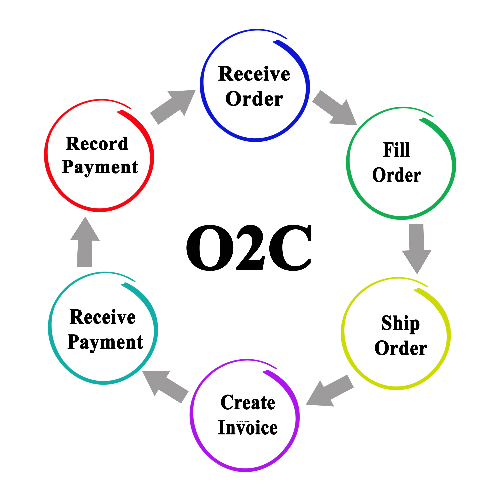

Professional Interviews

Interview #1: ERP Functional Analyst (SAP OTC), Ocean Spray
Career Journey
- First degree in International Relations
- Discovered interest in tech through hackathons
- Switched into Information Systems
- First job at consulting firm, learned SAP for orders and billing
- Now at a food & beverage company supporting the “Order to Cash” process
A Day in the Life
- Checks emails and tickets from sales/finance
- Handles billing errors, pricing updates, reporting requests
- Configures SAP to meet business needs
- Runs tests to confirm updates work correctly
- Creates training guides for end users
- Documents changes and progress before day ends
Advice for Students
- Understand business processes (orders, billing, payments) first
- Practice writing clear notes and simple “user stories”
Insight
- Most rewarding part is when updates save employees time or stress
Quote
“Do not worry about learning everything at once. Focus on how a simple order moves through a system. Once you understand that, the rest becomes easier.”

Interview #2: Application Developer, LA County Parks & Recreation IT Department
Career Journey
- Studied Computer Information Systems in college
- Started as an IT Intern working on small projects and bug fixes
- Gained experience with databases and scripting for automation
- Transitioned into full-time Application Developer role supporting county services
A Day in the Life
- Checks overnight system logs for errors and fixes issues immediately
- Maintains and updates internal applications used by county staff
- Meets with analysts to clarify requirements for new features
- Writes and debugs code (Java, Python, SQL) to improve apps
- Collaborates with teammates on GitHub for version control
- Uses Jira to track tasks and monitor project progress
- Troubleshoots issues reported by end-users and provides fixes
Advice for Students
- Focus on knowing how to problem-solving. Tools and languages will change
- Build small personal projects to showcase skills and learning
- Get comfortable with Git/GitHub early for collaboration
- Consider certifications like AWS Developer Associate or Microsoft Azure Developer
- Soft skills matter: communication with non-technical staff is just as important as coding
Insight
- Learn Git and GitHub early. It’s how teams share code, track changes, and avoid stepping on each other’s work.
Quote
“Don’t get overwhelmed by trying to learn every language or tool at once. Pick one and get really comfortable with it. The concepts transfer over to others.”

Role Comparison at a Glance
| Category | ERP Functional Analyst | Financial Systems Analyst |
|---|---|---|
| Career Path | International Relations → Information Systems → SAP Analyst → ERP Functional Analyst | Navy IT → Math/Statistics → Database Specialist → Financial Analyst → Financial Systems Analyst |
| Day in the Life | Emails, SAP updates, testing, training, documentation | System logs, finance meetings, SQL, testing reports, documentation, troubleshooting |
| Key Skills | SAP SD/OTC, SQL, Excel, process understanding, clear communication | SQL, Excel, compliance awareness, problem solving, communication |
| Advice | Learn how orders become invoices and payments; practice user stories | Start with Excel/SQL; consider Scrum or BA certs; focus on communication |
| Quote | “Do not worry about learning everything at once. Focus on how a simple order moves through a system.” | “If you can explain a problem in simple terms and suggest a clear next step, people will want you on their team.” |